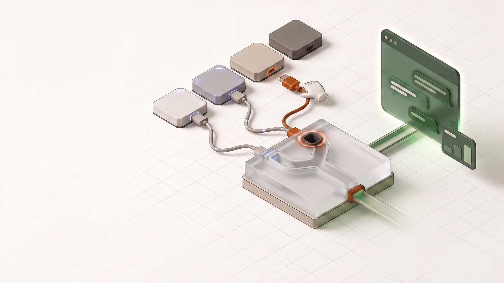
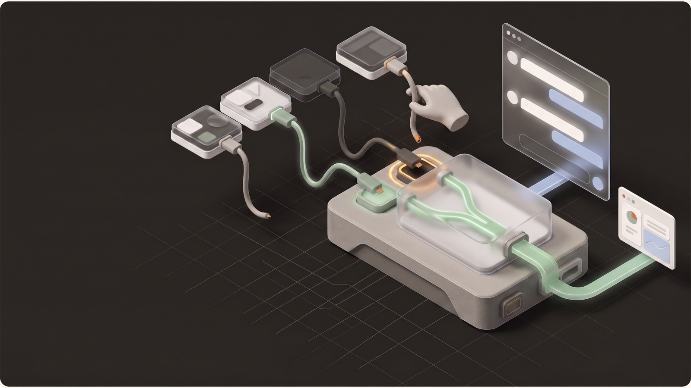
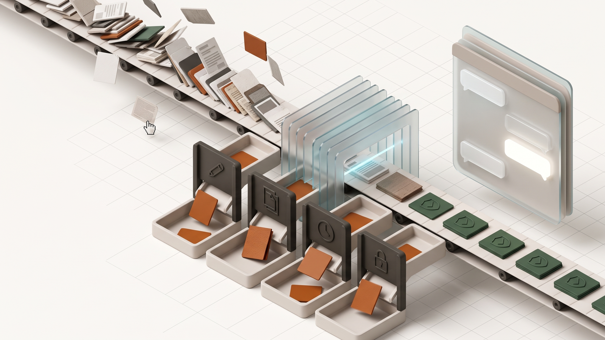
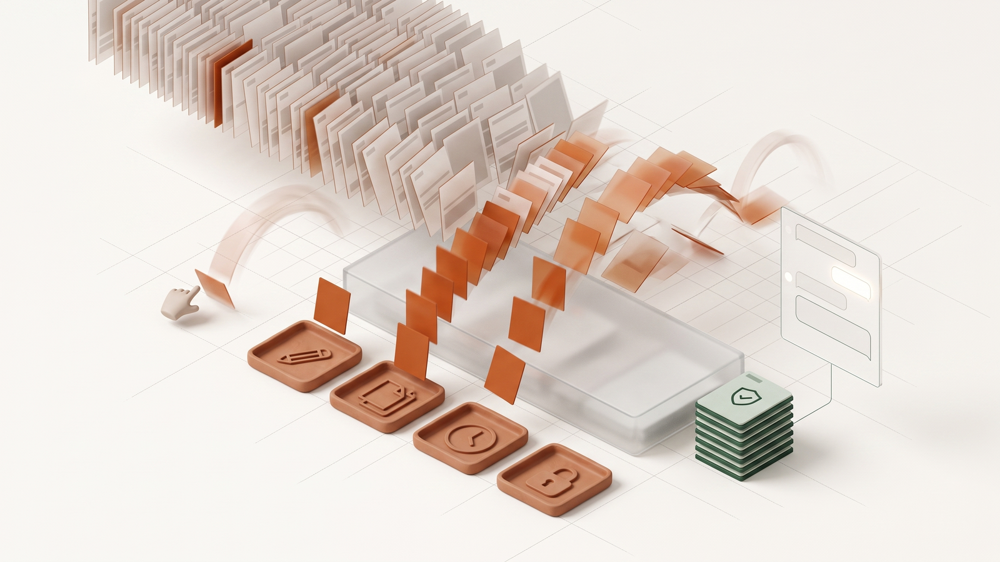

Homepage hero module · Interactive 3D scene concepts
Make better context visible.
Two directions for the interactive hero scene: wiring live sources into the context engine, and sorting a sea of documents down to a trusted set—each auto-plays the story and invites a touch, before the result reaches AI.
- 30° isometric construction
- Matte mineral materials
- Restrained glass layers
- Signals carry meaning
- Warm neutral foundations
Hero scene directions
04 scenes

Wire it up — light
Two sources reason together continuously; the scene runs on its own. A loose third cable and a pulsing port make the invitation to plug in obvious.


Wire it up — dark
The same scene in Pitch and Coal. Sage carries the live signal, Glacier the flow, and the merged channel lands in the downstream AI surfaces.


Quality sorter
A coin-sorter toy for documents: drafts, duplicates, stale files, and sensitive content leave the belt mid-fall, and only the trusted line reaches the answer.


Document cascade
The Solitaire win screen, but with files: a sea of questionable documents pours in and a tiny trusted set survives. Volume makes the fear concrete, then resolves it.